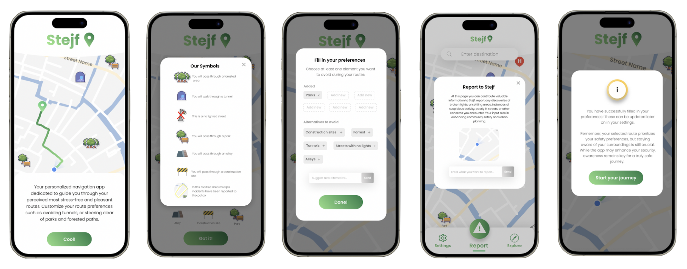
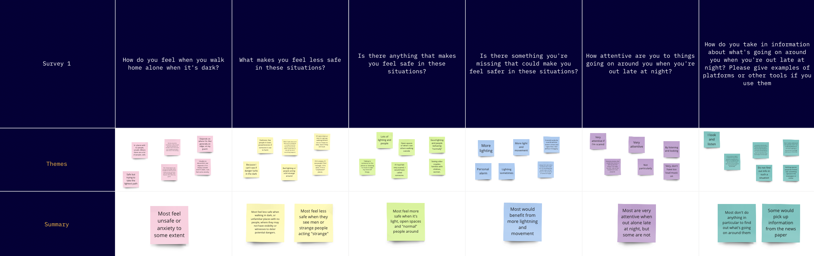

Stejf
Process
Objective
As part of the course User Experience Design and Evaluation at KTH, this project was inspired by an event called 'Prototypes for Humanity', and aimed to create a design that can positively impact humanity. Recognizing the issue of individuals feeling insecure and anxious while walking alone in the dark, our project was dedicated to designing a solution that alleviates these concerns, striving to transform the experience into a more secure one.
Research and Analysis
For the user research phase, we conducted interviews and surveys to identify the specific needs and pain points of our audience. Through in-depth interviews, we aimed to gain nuanced insights into individual experiences, extracting valuable qualitative data. Additionally, surveys were used to collect quantitative data, providing a broader perspective on common challenges. In the subsequent data analysis phase, we identified patterns, uncovered key themes, and synthesized valuable insights.
Ideating and Prototyping
In the ideation and prototyping phase, we translated our insights into actionable design solutions. Through brainstorming sessions, we generated a diverse range of ideas and user journeys to address identified pain points. These concepts were then turned into tangible prototypes, ranging from low-fidelity sketches to interactive mockups.
User tests and Iteration
Iterative testing allowed us to validate design decisions, ensuring the final prototype not only addressed user needs but also provided a seamless user experience. Throughout the iterative process, we encountered several conflicting aspects and ethical concerns of our design, emphasizing the importance of user testing.
Final design
The final product became "Stejf", a name derived from the fusion of "Stay Safe" in Swedish writing The prototype, designed in Figma, was presented at a UX exhibition at The Royal Institute of Technology in Stockholm and received great feedback for its innovative value and seamless design.